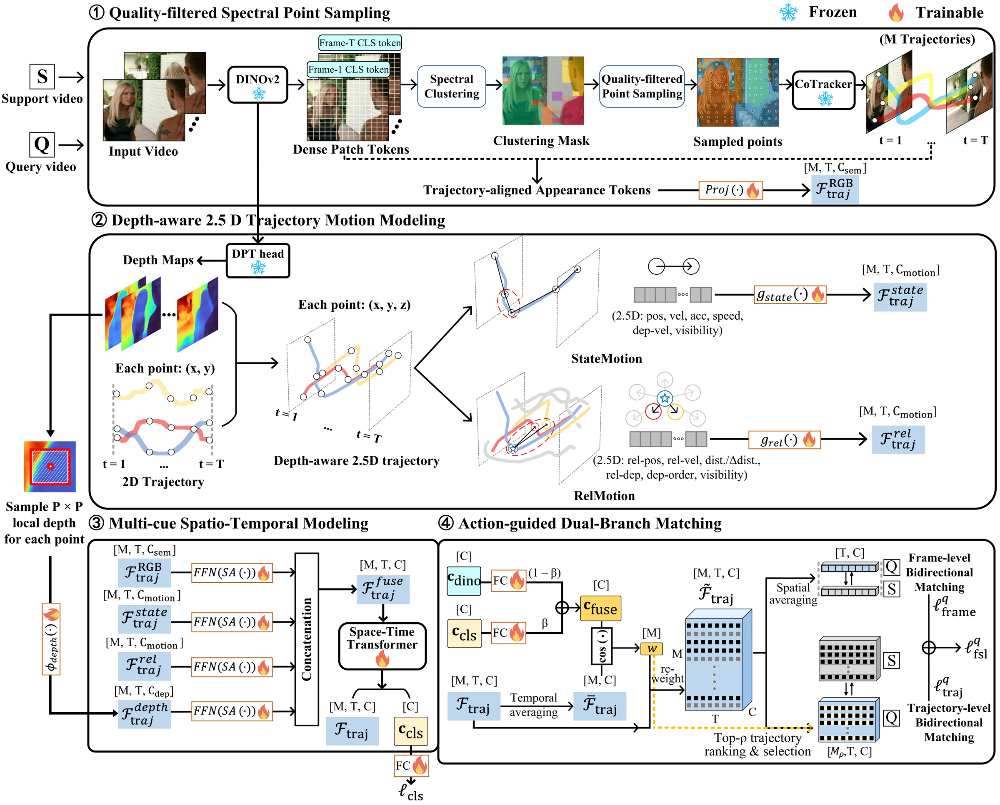
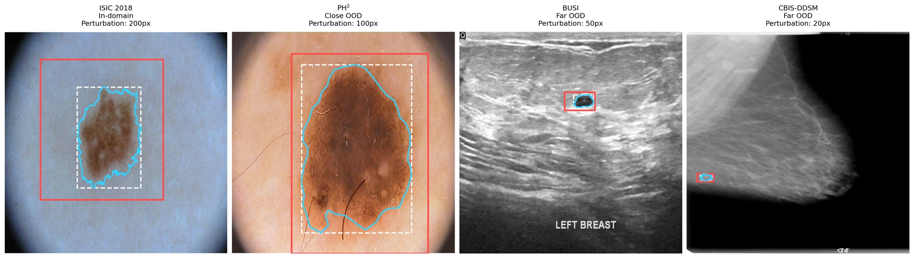
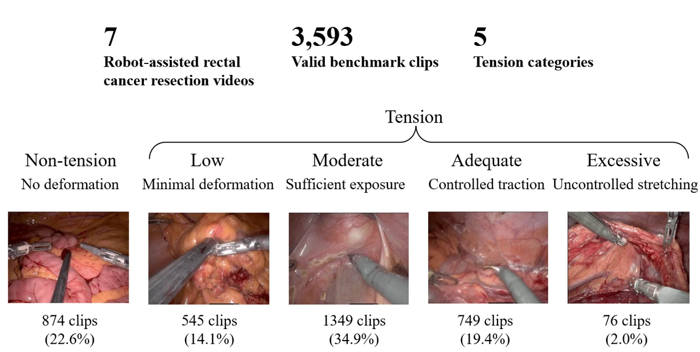
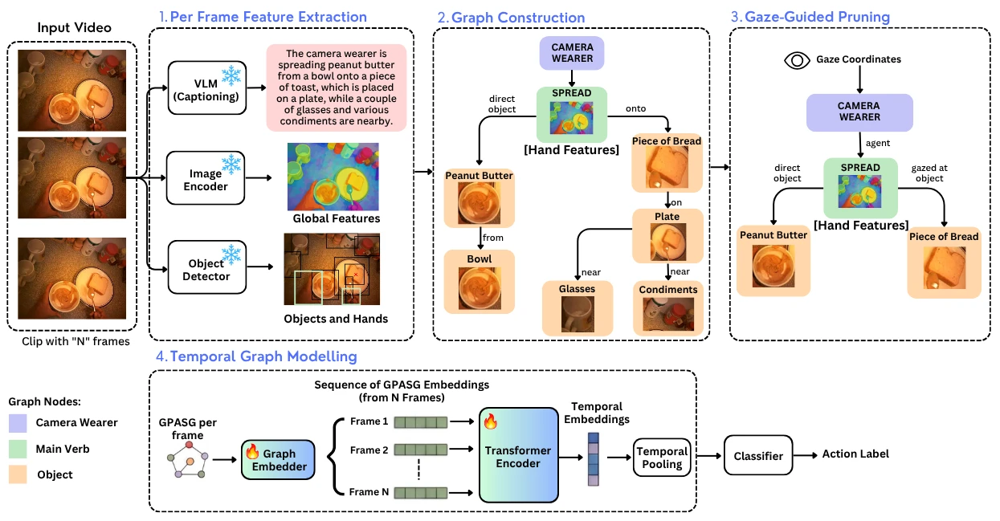
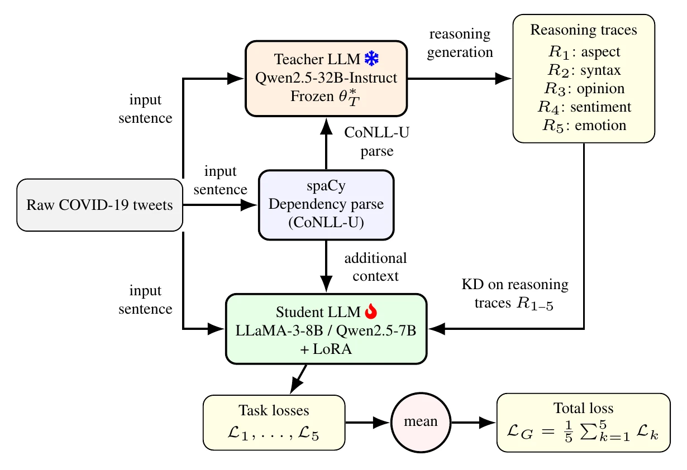

GeoTRAM: Geometry-aware Trajectory Modeling for Few-Shot Action Recognition
Geometry-aware trajectory modeling for recognizing actions from a small number of examples.
I’m a master’s thesis student in the Photogrammetry and Remote Sensing group at ETH Zürich, supervised by Li Mi and Lin Li, with mentorship from Konrad Schindler and Yarin Gal in collaboration with the University of Oxford. My thesis investigates geospatial knowledge and hallucinations in vision-language models.
I’m pursuing an MSc in Data Science at the University of Zagreb. Previously, I spent an exchange year and worked as a research assistant at the University of Twente with Estefanía Talavera, studying action understanding and surgical video analysis.

Geometry-aware trajectory modeling for recognizing actions from a small number of examples.

Studying how adaptation changes medical foundation model representations and robustness under domain shift and imperfect prompts.

Recognizing tissue tension in robot-assisted surgery with sparse point tracking, toward richer surgical skill assessment.

Using gaze to build compact scene graphs focused on the hand-object interactions that matter for first-person action understanding.

Distilling teacher-generated reasoning into smaller language models for aspect-level sentiment and emotion analysis in crisis-related social media.
* Equal contribution
Sep 2026 — Apr 2027
ETH Zürich · Photogrammetry and Remote Sensing
2023 — Present
Computer Vision and Deep Learning Consultancy
Nov 2025 — Aug 2026
University of Twente · EEMCS
Dec 2024 — Sep 2025
Arkensight
Mar 2025 — Jul 2025
University of Zagreb · FER · Project for Google
Aug 2024 — Oct 2024
Visage Technologies
Jul 2024 — Aug 2024
mStart · Fortenova Group
Nov 2022 — Jul 2024
Ericsson
Jul 2022 — Sep 2022
Ericsson
Sep 2026 — Jul 2027 (expected)
Master’s thesis · Photogrammetry and Remote Sensing
Li Mi, Lin Li · Mentors: Konrad Schindler, Yarin Gal
Sep 2024 — Jun 2027 (expected)
MSc in Data Science · FER
GPA 4.53 / 5.00 · Mentors: Siniša Šegvić, Dario Bojanjac
Sep 2025 — Jul 2026
MSc Data Science · Exchange year
GPA 8.50 / 10.00 · Estefanía Talavera
Sep 2021 — Jun 2024
BSc in Computer Science · FER
Mentor: Siniša Šegvić · Thesis: semantic segmentation of satellite images
One of five awarded · Thesis research at ETH Zürich
1st of 12 teams · Medical Image Analysis, University of Twente
2025/2026 · Top 1%
Methods for Assessing and Improving the Fairness of Deep Classifiers
1st of 30 teams · Fairness-aware melanoma classification
FER
2nd of 20 teams
Academic year 2025/2026
4th of 75 teams
2nd place · Academic year 2021/2022
Top 1% of high school students
3rd of 30 finalists